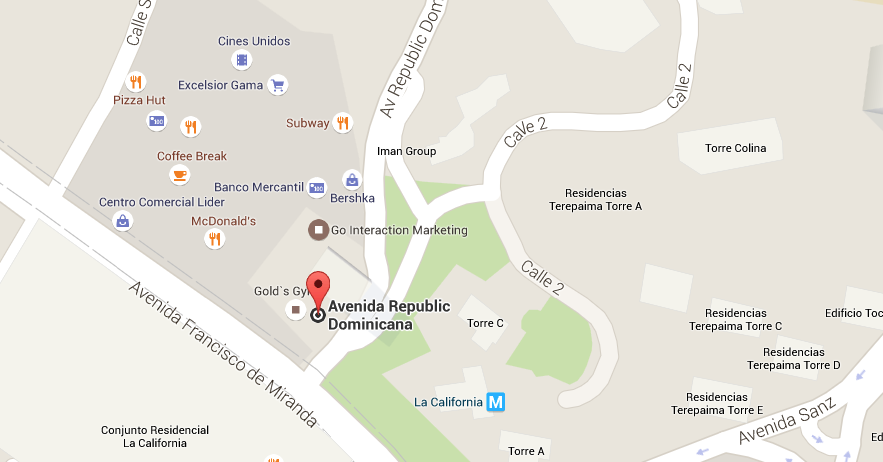

<ion-header>
  
  <ion-toolbar color="mycolor">
    <ion-buttons slot="start">
      <!--//////////////////////BTN menu///////////////////////////////-->
      <ion-menu-button></ion-menu-button>
    </ion-buttons>
    <!--//////////////////////Letras Folder///////////////////////////////-->
    <ion-title >TU RUTA</ion-title>
  </ion-toolbar>
</ion-header>

<ion-content>
  <div class="background-image">
    
  </div>
<!--////////////////////////////////////CONTENIDO///////////////////////////////////////-->
<ion-card class="coworker-card">
  <div class="login-form ion-padding">
    <div class="form-input">
      <ion-icon name="ellipse"></ion-icon>
      <ion-item>
        <ion-label position="floating">Punto de Partida</ion-label>
        <ion-input type="text"></ion-input>
      </ion-item>
    </div>
    <div class="form-input">
      <ion-icon name="albums"></ion-icon>
      <ion-item>
        <ion-label position="floating">Destino</ion-label>
        <ion-input type="text"></ion-input>
      </ion-item>
    </div>
  </div>
</ion-card>

<ion-card class="coworker-card">


    <ion-list  style="border-radius: 15px;" lines="none">
      <ion-item>
        <ion-button slot="end" fill="clear" >
          <ion-icon name="star-outline"></ion-icon>
          <ion-icon name="star-outline"></ion-icon>
          <ion-icon name="star-outline"></ion-icon>
          <ion-icon name="star-outline"></ion-icon>
          <ion-icon name="star-outline"></ion-icon>
          <ion-icon color="#000547" name="link-outline" ></ion-icon>
        </ion-button>
        <ion-avatar slot="start">
          
        </ion-avatar>
        <ion-label>
          <h1>###########</h1>
          <p>Conductor de profesion</p>
        </ion-label>
      </ion-item>

    </ion-list>

</ion-card>

<ion-card class="coworker-card">
  <div>
    
  </div>
</ion-card>

<ion-fab horizontal="center" vertical="bottom" slot="fixed">
  <ion-fab-button color="warning">
    <ion-icon name="search-outline"></ion-icon>
  </ion-fab-button>
  <ion-fab-list side="top">
    <ion-fab-button color="warning" routerLink="/confirmacion">
      <ion-icon name="car-sport-outline"></ion-icon>
    </ion-fab-button>
  </ion-fab-list>
</ion-fab>


<!--///////////////////////////////////////////////////////////////////////////////////-->
<ion-fab horizontal="end" vertical="bottom" slot="fixed">
  <ion-fab-button color="primary">
    <ion-icon name="caret-up"></ion-icon>
  </ion-fab-button>
  <ion-fab-list side="top">
    <ion-fab-button color="light" routerLink="/home">
      <ion-icon name="home"></ion-icon>
    </ion-fab-button>
    <ion-fab-button color="light" routerLink="/pasajero">
      <ion-icon name="person" ></ion-icon>
    </ion-fab-button>
    <ion-fab-button color="light" royterLink="">
      <ion-icon name="card"></ion-icon>
    </ion-fab-button>
    <ion-fab-button color="danger" routerLink="/splash">
      <ion-icon name="close-circle-outline"></ion-icon>
    </ion-fab-button>
  </ion-fab-list>
</ion-fab>
<!--///////////////////////////////////////////////////////////////////////////////////-->

<!-- Imagen de fondo -->

</ion-content>
